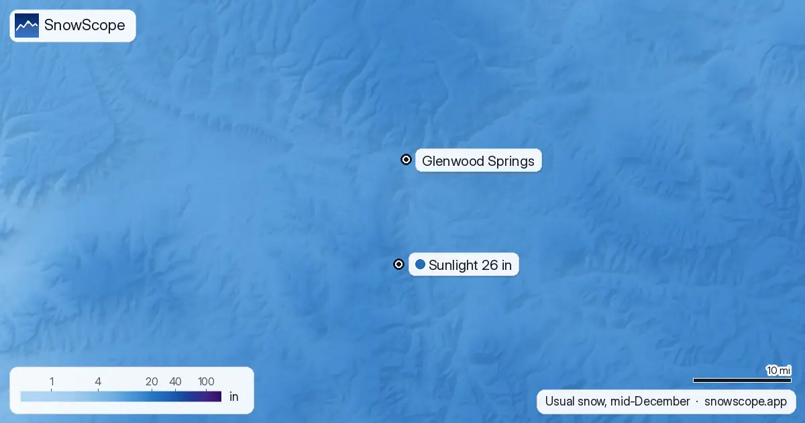

Sunlight فدجنبر: سكي برخص فColorado حدا Glenwood Springs
Sunlight هي محطة Colorado اللي الناس كينساوها ملي كيصفو فI-70. كاينة فوق Glenwood Springs، التيكيات ديالها كتبدا من 74 $، وهي داخلة فـIndy Pass. تلج دجنبر هنا مزيان حسب التاريخ ديالنا، ولكن ماشي مضمون.
شوف توقعات التلج مباشرة ديال Sunlight Mountain Resort فالتطبيق ديال SnowScopeالعلو ديال التلج، التنبيهات والخريطة 3D، فابور.
بعيدة على الزحام
على الخريطة ديالنا Sunlight صغيرة: 3 تيليفيريكات وحوالي 23 mi (37 km) ديال البيست، من حوالي 8,140 ft (2,480 m) حتى 9,850 ft (3,002 m). Glenwood Springs، بالعيون الحارة ديالها، هي المدينة تحت، وهادشي كيخلي نهار السكي هنا سهل يجمع مع حمام ديال العشية.

الأثمان، وتاريخ نهائي
التيكيات ديال يوم وحد ولا بزاف ديال الأيام كتبدا من 74 $. أحسن عرض هو Sunny 6 Pack: ستة تيكيات من 349 $، ولكن العرض كيسالي ف30 نوفمبر 2026، إذن خاصها تشريها قبل ماالموسم يبدا بصح.
Sunlight كاينة ثاني فلائحة Indy Pass. Indy Base Pass ثمنها 419 $ وIndy+ Pass 469 $، كل وحدة فيها يومين فكل محطة عضو.

دجنبر، سيمانة بسيمانة
التلج اللي كيدوم فالغالب كيوصل لنص الجبل، حوالي 8,990 ft (2,741 m)، فمنتصف أكتوبر. 1 دجنبر عادي فيه هناك 20 in (51 cm)، 15 دجنبر 26 in (67 cm)، ونهار عيد الميلاد 31 in (80 cm).
نسبة السيمانات ذات التلج الزوين فنص الجبل (معدل السيمانة 20 in، 50 cm، أو كثر) هي 57 % فأول سيمانة ديال دجنبر، 61 % فالتانية، 78 % فالتالتة و87 % فسيمانة عيد الميلاد. ف15 دجنبر، 72 % ديال الشتوات كان فيها 20 in أو كثر فنص الجبل. دجنبر ناقص خلى 13 in (34 cm): كافي لشي بيست مهيأة، ماشي للغابة.
Sunlight مقابل Ski Cooper، Wolf Creek و Vail
Ski Cooper عندها تقريبا نفس التلج فنص الجبل، 26 in (66 cm) ف15 دجنبر عادي، وثمن وسط السيمانة 49 $ (99 $ فالويكاند والعطل). Wolf Creek فيها تلج كثر، 34 in (87 cm)، بـ96 $ فالأيام العادية و110 $ فأيام الذروة. Vail كان عندها 24 in (62 cm) فنص الجبل ف15 دجنبر عادي حسب الأرقام ديالنا؛ ماقارناش الثمن ديالها.
ميزة Sunlight هي 6 Pack لمن كيقرر بكري، والصف القصير.
الزاوية الصريحة
بداية الموسم هنا نزلت شوية: 29 in (74 cm) فنص الجبل ف15 دجنبر عادي فأول 15 شتاء ديال السجل ديالنا، 25 in (63 cm) فآخر 15، والنسبة فوق 20 in هبطات من 80 % لـ60 %. الشتاء اللي فات عطا 14 in (35 cm) فهاد التاريخ. لرحلة ديال دجنبر، هدف للسيمانة قبل عيد الميلاد.
نصايح للي كيتزلجو
- قرر قبل 30 نوفمبر واش بغيتي 6 Pack.
- هدف لـ14 حتى 24 دجنبر، قبل العطل ومن بعد خطر بداية دجنبر.
- الطريق من Glenwood Springs ضيقة وفيها لفات: دواليب ديال التلج موصى بيها.
- جمع السكي مع العيون الحارة فنفس النهار: طريق قصيرة.
المراجع والمصادر
- Sunlight Mountain Resort, lift tickets (official) sunlightmtn.com/lift-tickets/
- Indy Pass, shop 2026-27 (official) www.indyskipass.com/shop
- Ski Cooper, day pass 2026-27 (official) www.skicooper.com/cooper-day-pass/
- Wolf Creek Ski Area, tickets and passes 2026-2027 (official) wolfcreekski.com/tickets-passes/
- OpenSkiMap (mapped lifts and runs) openskimap.org/
- avalanche.org, US avalanche centers and forecasts avalanche.org/
على هاد الأرقام
أرقام التلج: التاريخ ديال التلج ديال SnowScope، 46 شتوة اللي فاتت (1980-81 حتى ل 2025-26) فالعلوات المكتوبة (التحت، الوسط، الفوق)، إعادة بناء ديال التلج اللي فات لمنطقة مصححة بالعلو (على أساس ERA5-Land؛ Snow_Hydro 1 كم للمغرب)، ماشي البلاغات ديال المحطة. التلج دابا: الخريطة ديال SnowScope. التيليسييجات والبيستات والعلوات: الخرايط ديال OpenSkiMap. الأثمنة: الصفحات الرسمية اللي لتحت، متشافة نهار 13 نونبر 2026؛ الأثمنة الدينامية كتبدل مع التاريخ والطلب.
النشرات الرسمية ديال الانهيارات: Colorado Avalanche Information Center
كيفاش تستاشهد بهاد المقال
للبحث، التعليم ولا الصحافة: الأرقام والرسومات تقدر تعاود تخدم بيهم بحرية تحت CC BY 4.0 مع هاد الاستشهاد.
SnowScope (2026), Sunlight فدجنبر: سكي برخص فColorado حدا Glenwood Springs, https://snowscope.app/blog/ar/2026/11/sunlight-mountain-glenwood-springs-december-value.html, تشاف ف 2026-11-15
SnowScope (Atlas Labs). (2026, November 15). Sunlight فدجنبر: سكي برخص فColorado حدا Glenwood Springs. SnowScope snow reports. https://snowscope.app/blog/ar/2026/11/sunlight-mountain-glenwood-springs-december-value.html
BibTeX
@misc{snowscope2026sunlightmountainglenwood,
author = {{SnowScope (Atlas Labs)}},
title = {Sunlight فدجنبر: سكي برخص فColorado حدا Glenwood Springs},
year = {2026},
month = nov,
howpublished = {\url{https://snowscope.app/blog/ar/2026/11/sunlight-mountain-glenwood-springs-december-value.html}},
note = {Published 2026-11-15 09:34 UTC; accessed 2026-11-15}
}· CC BY 4.0 · الطريقة، الداتا والأدوات →
Sunlight Mountain Resort: التلج والحرارة حسب العلو، هاد الشتا مقارنة مع اللي فاتت (الأدوات) →
تابع Sunlight Mountain Resort
فابور: ميساج ملي يجي التلج، والتوقعات كل صباح.